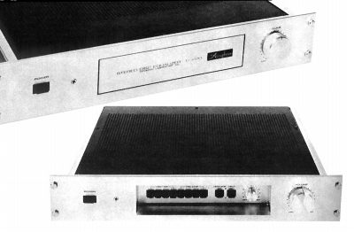

C-220

■価格
220,000円
■レコード再生専用プリアンプ
■入力感度/インピーダンス （ヘッドアンプ・オフ）2.0mV/100Ω,30kΩ,47kΩ,100kΩ（ヘッドアンプ・オン）0.1mV/100Ω
■RIAA偏差 +0.2dB
■最大許容入力 （ヘッドアンプ・オフ）400mV（ヘッドアンプ・オン）20mV
■SN比 （ヘッドアンプ・オフ）85dB/（ヘッドアンプ・オン）72dB
■高調波歪率 0.01%（20〜20,000Hz 定格入力時）
■消費電力 65W
■電源 AC100V,117V,220V240V
50/60Hz
■重量 10.7kg
■寸法 （A型）W48.2×H8.2×D34.5cm/（B型）W44.5×H8.2×D34.9cm
■発売
1977年7月
■販売終了 1979〜80年頃
■備考 価格は1977年頃のもの
レコード再生専用プリアンプ。入力は2系統で、それぞれ設定可能。
A型はラックマウントタイプ、B型は一般的なサイドプレートタイプ。
アキュフェーズのインデックスへ